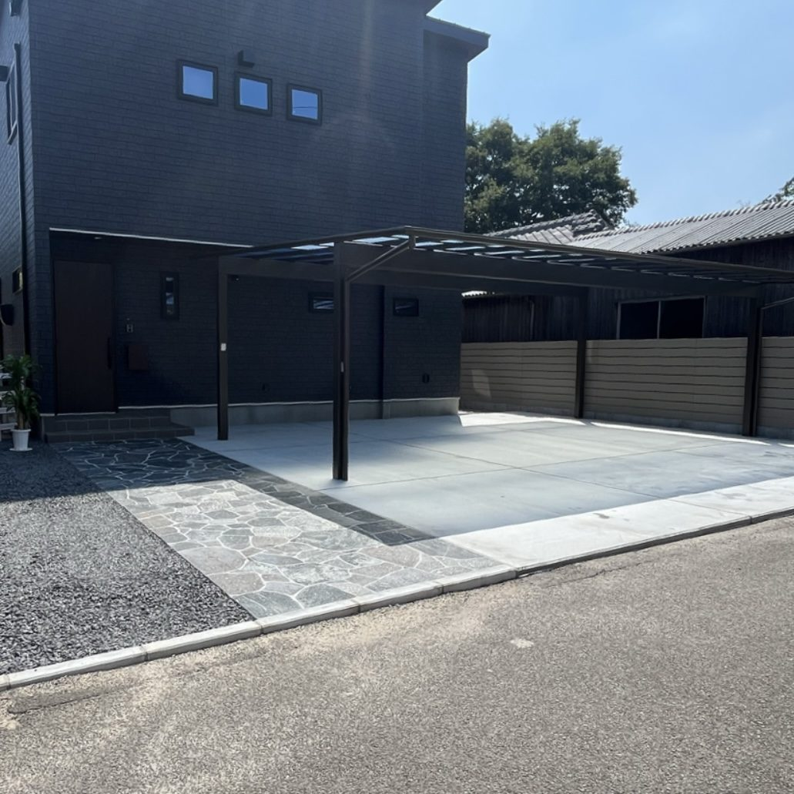
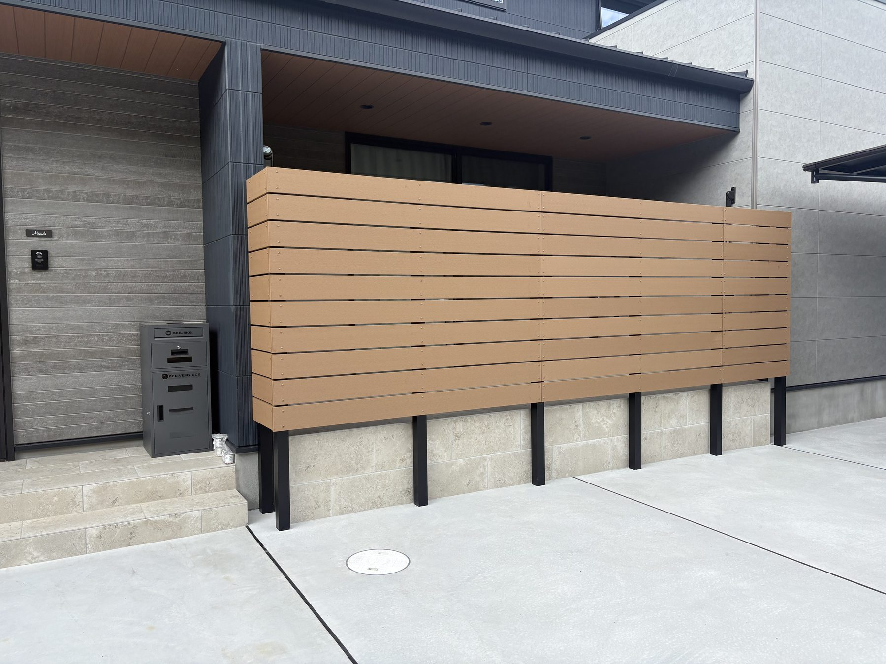
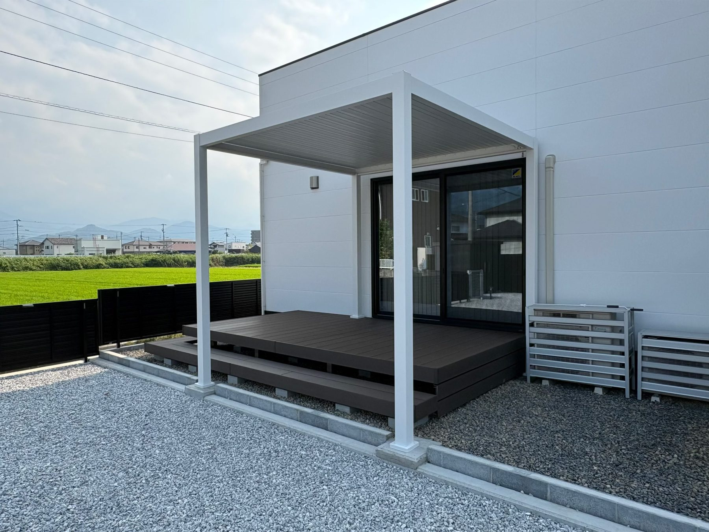
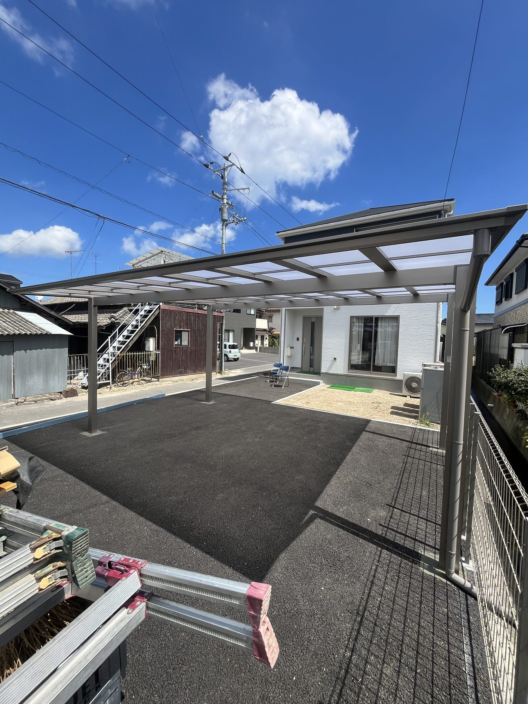
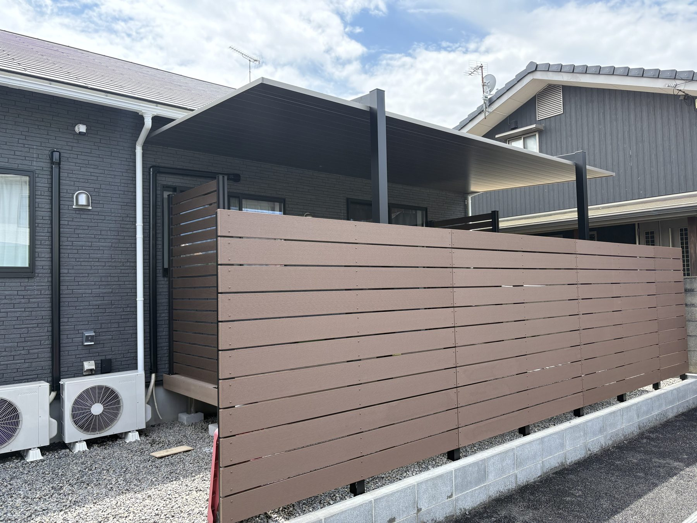

工種別に写真を追加
カーポート、土間、門柱など、該当する工種へスマホから施工写真を追加できます。
外構・エクステリア業者、一人親方、小規模施工店のためのホームページ制作です。増えていく施工事例を工種ごとに整理し、お客様が頼みたい工事を見つけやすくします。
外構工事は、扱う工種が多い仕事です。施工写真を並べるだけでは、見る人が自分の希望に近い工事を探しにくくなることがあります。
C-WEBでは、工種ごとに写真と説明を整理します。施工事例が増えるほど、対応できる仕事と積み重ねた実績が伝わるホームページへ育っていきます。
トップでは仕事の幅を伝え、各施工事例では工事内容を詳しく。初めて見るお客様にも、相談できる内容が伝わる構成にします。





PCを持っていなくても運用できます。帰宅後の作業を増やさず、現場の写真を新しい実績として残せます。
カーポート、土間、門柱など、該当する工種へスマホから施工写真を追加できます。
見せたい順に並び替え、公開・非公開の切り替えや削除もスマホで完結します。
長時間の打ち合わせや資料づくりを極力減らし、LINEとスマホ確認を中心に進めます。
下請け中心だった方や独立したばかりの方は、自社実績として使える写真をまだ持っていないことがあります。
使える写真がない場合は、複数のイメージ画像から選べます。実績ではない画像には「施工イメージ」と表示します。
自社の施工実績が増えたら、ご自身のスマホから本物の施工写真へ追加・差し替えできます。
※独自ドメインや運用に必要な維持費は、ご契約前に年額まで明示します。
はい。カーポート、フェンス、門柱、土間コンクリートなど、扱う工事ごとに施工事例を整理して見せられます。
はい。掲載できる実写素材がない場合は施工イメージと明記した画像を用意します。実績が増えたらスマホから差し替えられます。
必要ありません。得意工事、増やしたい仕事、対応エリアなどを伺い、工種の分け方や文章はこちらからご提案します。
必要ありません。写真の追加、削除、並び替え、公開・非公開の変更までスマートフォンで行えます。
まだ依頼を決めていなくても大丈夫です。